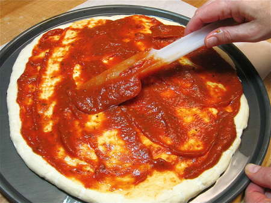

Week 1
Amazing Pizza Sauce
Created (totally stolen) by Josh
January 8, 2018
This is a delicious pizza suace that can be made in about 40 minutes.
- 6 oz tomato sauce
- 6 oz warm water
- 3 tbsp parmesan
- 1 tsp garlic cloves
- 2 tbsp honey
- 1 tsp anchovy paste
- 3/4 tsp onion powder
- 1/4 tsp oregano
- 1/4 tsp marjoram
- 1/4 tsp basil
- 1/4 tsp pepper
- 1/8 tsp cayenne pepper
- 1/8 tsp red peppper flakes
- Salt to taste
- Mix all the ingredients thoroughly in a bowl

- Let sit for 30 minutes
- Spread on your pizza and cook
- Enjoy!